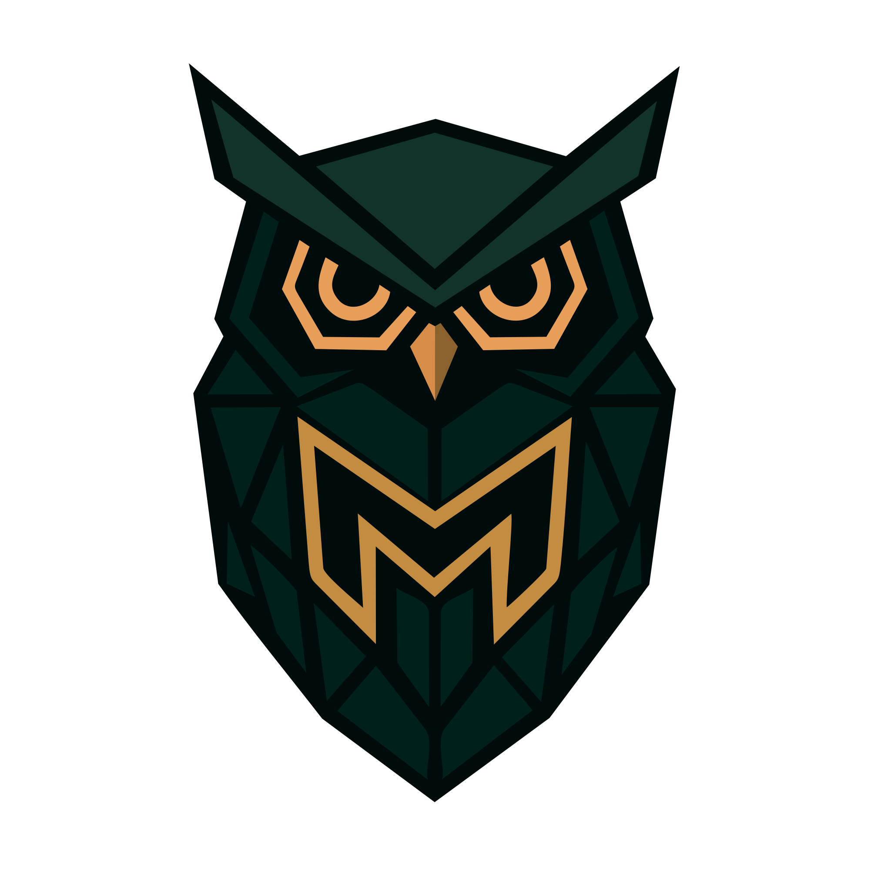

Sou artista visual focada em composição cinematográfica, pôsteres digitais, e narrativa orientada por conceitos. Meu trabalho explora atmosfera, narrativa, e impacto emocional através de linguagem visual forte.
Sou especialista em design de pôsteres, estudos de personagens e ambientes, Estou constantemente aprimorando minhas habilidades em composição, iluminação e narrativa visual.
Disponível para trabalhos freelancers e colaborações.
Email: seuemail@email.com
Phone: +55 48 99999-9999